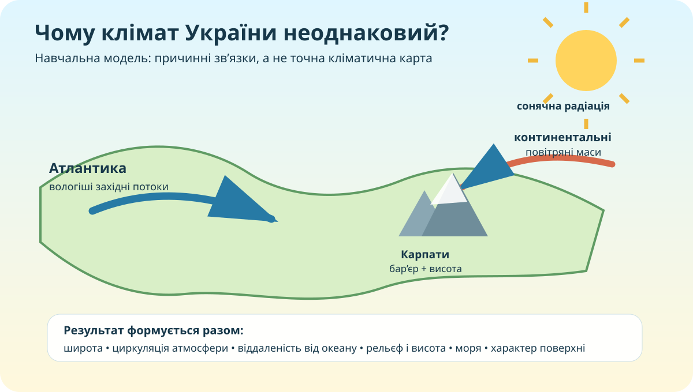

Earth Nullschool
Анімована циркуляція вітру, температура, вологість, тиск на різних висотах. Модель GFS/інші джерела.
Відкрити глобус →Клімат — не «середня погода з підручника». Спробуємо пояснити його як систему: скільки енергії надходить, звідки приходить повітря, як далеко океан, що робить рельєф і чим вкрита поверхня. Спочатку — гіпотези й дані. Теорія буде після.
Якби широта була єдиним чинником, точки на одній паралелі мали б майже однакові температури й опади. Але реальна Україна так не працює.
Який чинник найсильніше пояснює зменшення океанічного впливу із заходу на схід?

Південніше → в середньому більше сонячної енергії.
Далі на схід → слабший пом’якшувальний океанічний вплив.
З висотою температура зазвичай знижується; гори змінюють рух повітря й опади.
Помірно теплі умови; континентальність середня; рельєфний вплив невеликий.

Для України важливі повітряні маси помірних широт, вторгнення арктичного повітря та надходження теплого повітря з півдня. Західне перенесення часто приносить повітря атлантичного походження. Циклони й антициклони змінюють конкретну погоду, а повторюваність таких процесів формує кліматичні риси.
| Чинник | Що перевірити | Доказ для своєї місцевості | Очікуваний вплив |
|---|---|---|---|
| Широта | Положення відносно півночі/півдня України | ||
| Континентальність | Віддаленість від Атлантики, моря | ||
| Рельєф | Висота, гори, відкритість території | ||
| Циркуляція | Переважні напрями перенесення повітря |
Це справжні метеорологічні модельні поля, а не ілюстрація, створена для вправи. Вони описують поточний стан атмосфери та прогнози — їх не можна називати багаторічними кліматичними нормами.
Джерело: Windy. Прогнозна модель ECMWF, яка може оновлюватися. Якщо вбудована карта заблокована, відкрийте повну карту Windy. За потреби змініть масштаб або дату.Перейдіть між картами вітру й температури. Чи можна лише за теперішнім напрямком вітру довести, що захід України завжди вологіший за схід?
Увімкніть шар опадів. Чи можна пов'язати смуги опадів із циклонами й фронтами? Запишіть одне спостереження та одну межу висновку.
Анімована циркуляція вітру, температура, вологість, тиск на різних висотах. Модель GFS/інші джерела.
Відкрити глобус →Сонячне випромінювання й метеопараметри: виберіть точку в Україні та режим Climatology.
Досліджувати дані →Реальна карта довгострокової сонячної енергії для України. Порівняйте захід, північ і південь.
Карти опромінення →Багаторічні кліматичні поля й зміни температури та опадів; не плутайте майбутні сценарії з вимірюваннями.
Кліматичний атлас →Супутникові знімки реальної хмарності. Спостереження ≠ доказ кліматичної норми.
Супутникова карта →Модельні кліматограми міст за 30-річними рядами. Порівнюйте сезонний перебіг, а не одну добу.
Кліматограма Києва →Змініть кожен параметр окремо. Це навчальна геометрична модель: обчислює висоту Сонця опівдні для характерних дат та умовно показує поглинання енергії. Вона не відтворює реальний клімат чи точну температуру.
Відносно доступна енергія поверхні
Порівняйте 46° і 51° пн. ш. за тієї самої дати. Потім поверніть широту на 49° та змініть поверхню зі снігу на ліс. Що змінюється в моделі, а що вона не враховує?
За однакової широти і сезону свіже снігове поле зазвичай відбиває більшу частку короткохвильової сонячної енергії, ніж ліс. Чи означає це автоматично, що повітря над снігом завжди холодніше?
Змоделюйте надходження вологого повітря та підйом над горами. Підіймаючись, повітря зазвичай охолоджується; за достатньої вологості може відбуватися конденсація та випадання опадів. Результат залежить також від стійкості атмосфери, температури і напрямку потоку.
Діаграма схематична; це не географічний профіль із точною висотою вершин. Перемкніть напрям вітру: який схил стає навітряним?
Розташуйте чотири події за порядком у типовому орографічному механізмі.
Львів і Луганськ мають близьку географічну широту, але різні умови надходження вологи та прояву континентальності. Які дані допоможуть перевірити причини відмінності їхнього багаторічного клімату? Оберіть всі три релевантні типи доказів.
Порівняйте розподіл температур за місяцями, а не лише середнє за рік. Модель ≈30 км може пропускати локальні ефекти.
Якщо сервіс змінить адресу сторінки, знайдіть місто через пошук на Meteoblue.
Надходження енергії залежить від кута падіння променів, тривалості дня, хмарності й стану атмосфери. Загалом із півночі на південь України надходження сонячної енергії збільшується.
Перевірка: чи достатньо знати широту для точного прогнозу температури?Пряма радіація надходить безпосередньо від сонячного диска, розсіяна — після розсіювання в атмосфері. Сумарна короткохвильова радіація — сума прямої та розсіяної на поверхні.
Перевірка: чому за хмарної погоди все одно світло?Альбедо — частка відбитої короткохвильової енергії. Сніг зазвичай відбиває більше, ніж ліс чи темний ґрунт. Повний радіаційний баланс враховує також довгохвильове випромінювання.
Перевірка: чому поглинуту радіацію не можна ототожнювати з температурою повітря?Західне перенесення, циклони, антициклони та атмосферні фронти переносять тепло й вологу. Помірні, арктичні й тропічні повітряні маси по-різному впливають на погоду; їх повторюваність формує клімат.
Перевірка: чому один циклон не визначає клімат регіону?Із висотою в тропосфері температура повітря зазвичай знижується, але реальний вертикальний градієнт змінний. Гори можуть посилювати опади на навітряних схилах і створювати дощову тінь.
Перевірка: як зміниться навітряний схил при зміні вітру?Море, суша, рослинність, ґрунти, сніг та міста нагріваються й обмінюються теплом і вологою по-різному. Вплив Атлантики на рівнинах у середньому слабшає в напрямку на схід і південний схід.
Перевірка: чому морський вплив не можна пояснити лише кілометрами до берега?Фрагмент 0:22–3:25 • чому Сонце нагріває території по-різному?
Відкрити відео →Фрагмент 3:20–5:57 • яке явище переносить вологу, а яке сприяє стійкій погоді?
Відкрити відео →Чотири ситуаційні запитання, два завдання з кількома правильними відповідями, відповідності, причинна послідовність, оцінка достатності доказів і CER. Правильні відповіді відкриються лише після завершення тесту.
Зробіть скриншот цієї картки й надішліть учителю.
Який набір чинників найкраще пояснює клімат Вашої місцевості?
Наведіть мінімум два конкретні докази: карта, висота, положення, циркуляція, дані.
Поясніть причинний зв’язок: чому ці докази підтримують тезу?
Базовий рівень: оберіть 3 чинники клімату своєї громади й наведіть для кожного по одному доказу з карти.
Достатній рівень: порівняйте громаду з містом на схожій широті та поясніть дві відмінності чинниками.
Високий рівень: запропонуйте дві конкуруючі гіпотези для кліматичної відмінності двох регіонів; визначте, які дані дозволять обрати між ними.
За бажанням: вітри в Earth Nullschool або кліматична карта Copernicus.